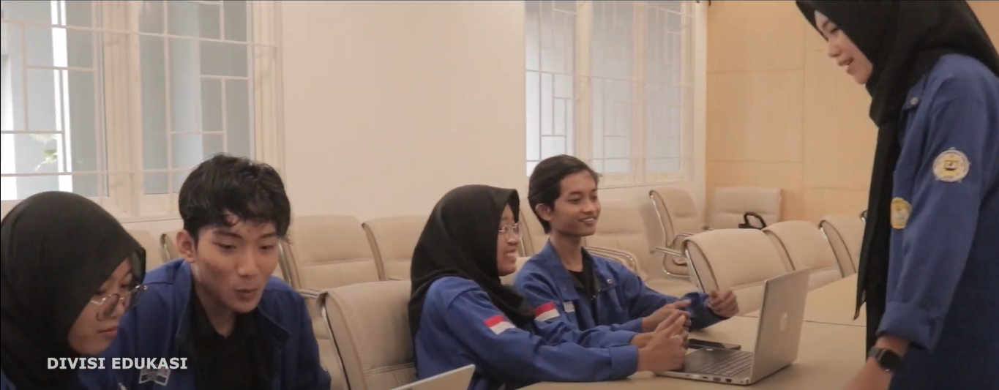

S1 Informatika - Universitas Jenderal Soedirman 2023 - Sekarang.
Hubungi Saya
Career Profile
Halo! Saya Defit Bagus Saputra, mahasiswa Informatika Universitas Jenderal Soedirman yang saat ini sudah menempuh perkuliahan selama 3 Semester. Saya cukup memiliki pengalaman dalam Pengembangan Web dan Desain Grafis, serta aktif dalam kegiatan organisasi di kampus.
Divisi Edukasi bertanggung jawab untuk
mengembangkan potensi akademik yang dimiliki oleh mahasiswa Jurusan Informatika
Unsoed yang terdiri dari Program Studi Informatika dan Program Studi Teknik Komputer.
A. Visi dan Misi Edukasi.

a. Visi
Mencapai mahasiswa Jurusan Informatika Unsoed yang unggul dan berkualitas tinggi
dengan menyediakan fasilitas sebagai alat penunjang pencapaian di bidang akademik
sehingga mahasiswa dapat memahami materi yang dipelajari dengan baik yang
bermanfaat bagi pribadi maupun masyarakat.
b. Misi
1. Meningkatkan pencapaian pada bidang akademik mahasiswa Jurusan Informatika
Unsoed dengan mengembangkan kompetensi mahasiswa.
2. Memberikan fasilitas kepada mahasiswa Jurusan Informatika Unsoed dalam
memperoleh informasi bidang akademik di perkuliahan.
3. Menyelenggarakan kegiatan sosialisasi dan bimbingan bagi mahasiswa Jurusan
Informatika Unsoed dalam berbagai aspek akademik yang bertujuan untuk
meningkatkan kualitas mahasiswa Jurusan Informatika Unsoed.
Mahasiswa Berprestasi merupakan agenda kerja yang bertujuan untuk
menemukan, menghimpun, dan menyeleksi mahasiswa yang memiliki prestasi
unggul terutama dalam aspek akademik pada Jurusan Informatika. Hasil seleksi
dari Mahasiswa Berprestasi akan digunakan sebagai Delegasi dari Jurusan
Informatika dalam tingkat yang lebih tinggi yaitu tingkat Fakultas.
Acara ini terlaksana pada 21 Juni 2024 dan dihadiri oleh Ibu Nur Chasanah, S.Kom., M.Kom sebagai pengisi materi Sosialisasi Mapres, serta Ahmad Rian Syaifullah, Mahasiswa Berprestasi Jurusan Informatika tahun 2024. Ibu Nur Chasanah menjelaskan persyaratan dan prosedur seleksi Mahasiswa Berprestasi 2025, sementara Ahmad Rian Syaifullah membagikan pengalamannya kepada para peserta.